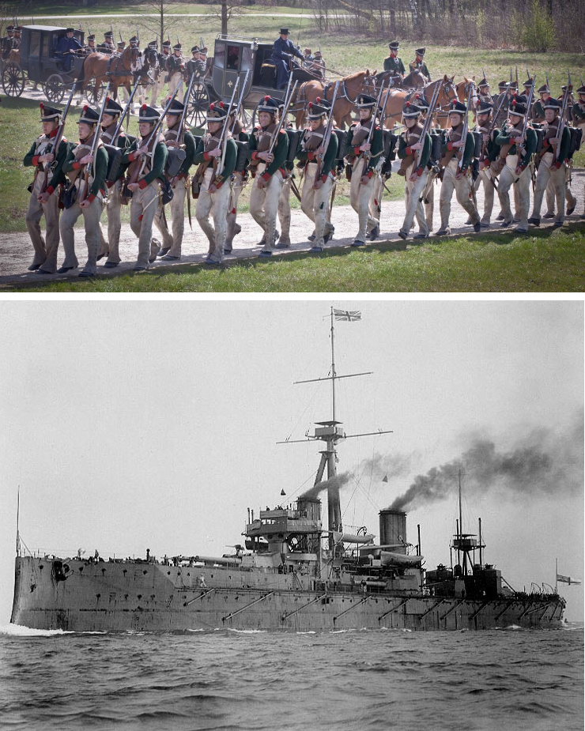
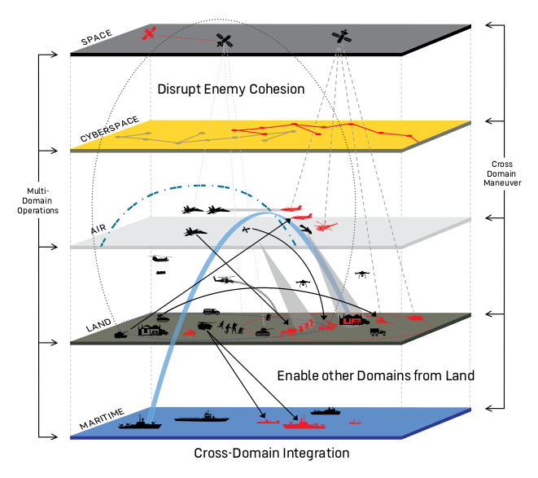
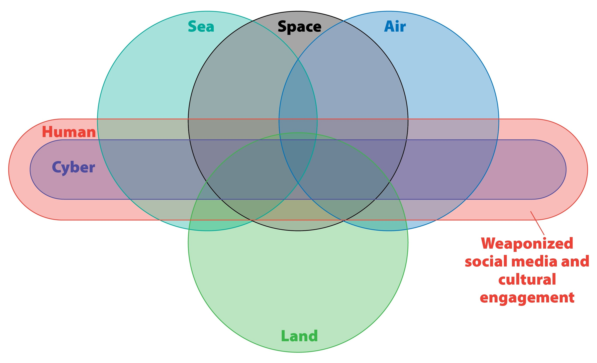

“Os desafios estratégicos para o ensino das ciências militares e de segurança face aos novos contextos tecnológicos e operacionais”
Domínios de operação
Domínios de operação - XIX

Domínios de operação - XX

- operational domains evolution
- séc. 19, dominio terrestre e maritimo
- séc. 20, dominio aérea, e depois o espacial, inicio do potencial do ciberespaço
- séc. 21, dominio ciberespaço cresce exponencialmente a sua dimensão
images - XIX land - https://www.esquire.com/style/a41725/the-epic-history-of-military-style/ - XIX sea - https://en.wikipedia.org/wiki/HMS_Dreadnought_(1906)#/media/File:HMS_Dreadnought_1906_H61017.jpg - XX land - https://en.wikipedia.org/wiki/Tanks_in_World_War_II#/media/File:M3-Stuart-Fort-Knox-1.jpg - XX sea - https://en.wikipedia.org/wiki/Oliver_Hazard_Perry-class_frigate#/media/File:Oliver_Hazard_Perry-class_frigates_underway_in_1982.JPEG - XX air - https://en.wikipedia.org/wiki/Lockheed_SR-71_Blackbird#/media/File:Lockheed_SR-71_Blackbird.jpg - XX space - https://commons.wikimedia.org/wiki/File:Sputnik_satelitea.jpg - XXI multi domain diagram
Domínios de operação - XXI

Operações multi-domínio
- Dados
- Informação - em fluxo
- Planeamento e operações intra e entre domínios
- Velocidade
- muldi-domain operations, integration, holistic, multi threats on multiple domains simultaneously
- data
- information
- information in flow
- planning and operating across domains
- speed
- speed, the threat is as fast as its slowest component, our response is as fast as our slowest component -> autonomy as the fundamental game changer

Dados, Informação e os Sistemas de Decisão
- explosão de dados
- space
- cyber
- Autonomous and Unmanned Systems
- redes de sensores
- necessidade de extração de actionable knowledge (IA, autonomia, formação do pessoal)
Cyber
- contexto cyber
- Exploração da crescente ameaça cibernética
- Relevância da cibersegurança na proteção de informações e operações
- Informação como asset militar
- evolução das ameaças (número, complexidade, velocidade, IA)
Autonomia | Desafios e oportunidades
- informação
- Papel da inteligência artificial na análise de dados e tomada de decisões
- Benefícios da IA na detecção de ameaças e na otimização de operações
- física
- DDD
- low cost, low knowledge, open source
- assimetria
Geopolitica
- ideas do New Fire
- ideas do Chip Wars
- Cyber & IA & Chips
Ética
- cyber - ideias palestra IUM
- problema da atribuição
- crimes de guerra, aplicação lei humanitária, …
- ia - ideias da prof.paola gaeta EU Lethal Autonomous Weapons Systems
Educação
O plano
“Education should prepare yong people for jobs that do not yet exist, using technologies that have not yet been invented, to solve problems of which we are not yet aware”
O que sabemos
O que sabemos que não sabemos
O que não sabemos que não sabemos
- Velocidade da evolução > duração ciclos de formação - o que vamos ensinar?
O que sabemos
- atualizar os curriculos
- manter as bases, à luz das mudanças constantes da atualiadade
O que sabemos que não sabemos
- investimento na investigação
- formação do corpo docente
O que não sabemos que não sabemos
- investimento na investigação, formação do corpo docente e atualização das técnicas de ensino- Velocidade da evolução > duração ciclos de formação
- O que vamos ensinar?
- atualizar os curriculos, retirando o que não é relevante e adicionando o que é
- reinterpretar as bases que ensinamos agora à luz das mudanças constantes do contexto cientifico-tecnológico, socio-económico, político e militar
- há conhecimento base que é sempre relevante, mas a sua aplicação muda ao longo do tempo
- investimento na investigação, formação do corpo docente e atualização das técnicas de ensino
Directiva estratégica FAP
pág. 16
Ciência e Tecnologia: O ritmo da evolução da tecnologia, que frequentemente se apresenta disruptiva, é suportada por enormes avanços da ciência e obrigará as organizações a inovar e introduzir sistemas suportados por inteligência artificial (AI) e de machine learning, interligados em redes físicas e virtuais assentes em sistemas com elevadas capacidades de processamento e de armazenamento. Estes fatores têm reflexos na tecnologia aplicada nos sistemas de defesa, com principal impacto nas plataformas aéreas de nova geração, sensores e no armamento.
Ameaças e desafios: Movimentos populistas e extremistas tirarão vantagem dos nacionalismos exacerbados; no plano da ideologia/cultura/religião para poderem superar a lealdade aos Estados-Nação. Estas ameaças exigirão Forças capazes de permanecer em combate de alta intensidade e duração em todos os domínios, sendo autossustentadas, mas também modulares, adequando-se para abordar toda uma gama de futuras missões militares, com capacidade de negar os sistemas C4/ISR3 ao adversário através de ciberataques.
- página 18
• Capacidades Aéreas: A edificação de capacidades aéreas para operações multi-domínio3 caracteriza-se pela integração de novas tecnologias em ambiente multicamada4 e conceitos de emprego, a que acresce o alargamento do espectro de missão da Força Aérea, nomeadamente com integração de meios aéreos para ações de proteção civil. Adicionalmente, a sustentação dos sistemas de armas
OE3 – Melhorar o ensino, a formação militar e a investigação científica
LA3.1 – Adequar os modelos de ensino e a formação militar às necessidades efetivas da Força Aérea e demais estruturas conjuntas da Defesa Nacional.
LA3.2 – Expandir as áreas de investigação para domínios do Espaço e do Ciberespaço, explorando o desenvolvimento de tecnologias disruptivas para aplicação em operações militares na dimensão das tecnologias emergentes.
OE4 - Otimizar a gestão da organização com processos simples e eficazes suportados em sistemas de informação atuais e resilientes
LA4.1 – Promover a transição digital e a desmaterialização de processos explorando técnicas e tecnologias ágeis que facilitem a eficiência, reduzam a pegada ecológica e a complexidade do processo de tomada de decisão.
LA4.2 – Desenvolver Sistemas de Informação modulares e resilientes com capacidade de evolução adaptativa, integrados com o domínio de ciberespaço assentes em modelos de gestão de redes e data centres derivados de arquiteturas modernas.
SEGUREX - contexto
Painel 2 – Os desafios estratégicos para as ciências militares e da segurança face aos novos contextos tecnológicos e operacionais
Enquadramento: O incremento exponencial do conhecimento passível de ser vertido em tecnologias direcionadas para uso nos domínios da defesa e da segurança aportam a necessidade de se considerarem novos contextos estratégicos, tecnológicos e operacionais reclamando novas e diversificadas competências de comando. Constatação que decorre da observação de um ambiente global marcado por significativas mudanças nos contextos operacionais que reivindicam formações de base, quer com crescente componente interdisciplinar, quer com forte integração de tecnologias de ponta, para além do recurso a mais sofisticados conhecimentos de base para o desempenho das funções de defesa e segurança. Circunstâncias que reivindicam especial agilidade na conceção de currículos para a preparação de profissionais rapidamente adaptáveis a novas situações de comando e operação, sem perder de vista a dimensão ética que lhe está subjacente.
Footnotes
Modernization — Modernizing how we fight: Future combat will require a different approach than what the Joint Force has previously taken. Multi-Domain Operations (MDO) will enable the Army to give the Joint Force a decisive advantage by forcing an enemy to confront multiple threats simultaneously from multiple domains. The MDO concept guides our entire modernization effort, describing the capabilities we need to compete and win on the future battlefield. –US Army (2020) AMERICA’S ARMY: READY NOW,INVESTING IN THE FUTURE FY19-21 accomplishments and investment plan↩︎
“The Indo-Asia Pacific and the Multi-domain Battle Concept” https://www.pacom.mil/Media/News/News-Article-View/Article/1125682/the-indo-asia-pacific-and-the-multi-domain-battle-concept/↩︎
C4/ISR - Command, Control, Communications and Computers / Intelligence, Surveillance and Reconnaissance.↩︎
3 Multi-Domain Operations (MDO) – Operações compostas pelos domínios aéreo, terrestre, marítimo, espacial, ciberespaço, além do espetro eletromagnético. As ações da força são executadas em múltiplos domínios, sendo o planeamento integrado e a execução sincronizada à velocidade e escalas necessárias ao cumprimento da missão (USAF, 2021).↩︎